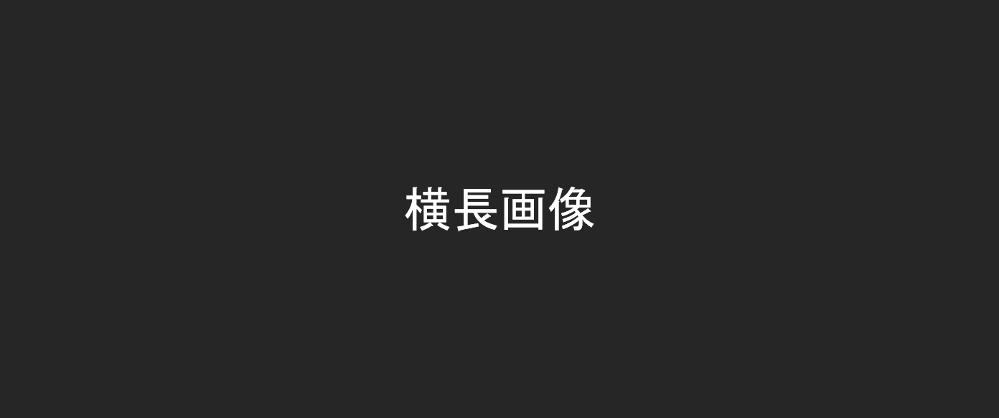

共生環境評価領域の研究・教育目標
人間活動からの環境負荷が人々の生活環境および自然生態系に及ぼす影響を評価し、環境を保全・回復・創造するための環境共生技術を探求します。そのために、 地球・地域・都市・建築内空間等の様々なスケールにおいて、人間活動が、大気・水・熱エネルギーの環境循環に及ぼす影響と、人間活動からの環境負荷物質の環境動態を明らかにします。
アプローチは、
Monitoring・Modeling・Management の3つの手法の組み合わせが基本であり、環境動態を表現するための数理モデルを構築し活用するアプローチを中心とした工学技術の研究と教育を行います。ちなみに、のロゴは、Monitoring・Modeling・Managementの3つの頭文字を表しています。
新しいお知らせ
-
松尾助教、研究員大塚さんがIWEE2019で発表します。
-
松尾助教、研究員大塚さんがIWEE2019で発表します。
-
松尾助教、研究員大塚さんがIWEE2019で発表します。